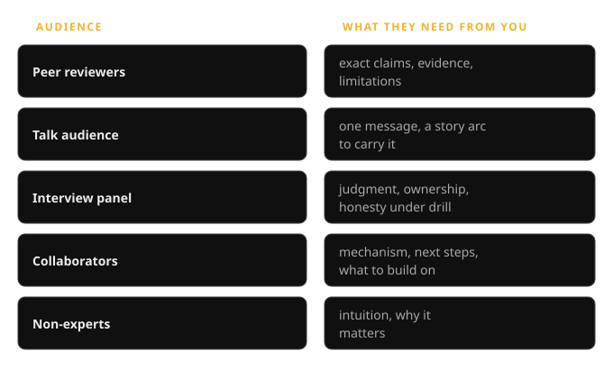
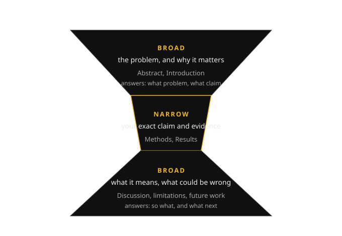
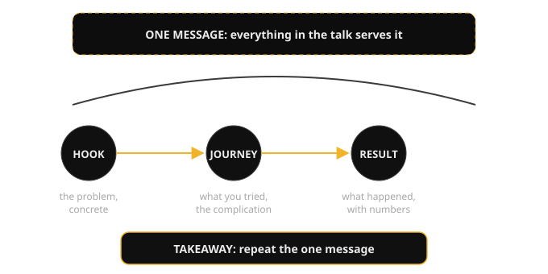
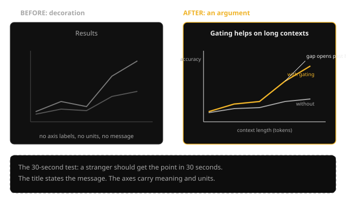
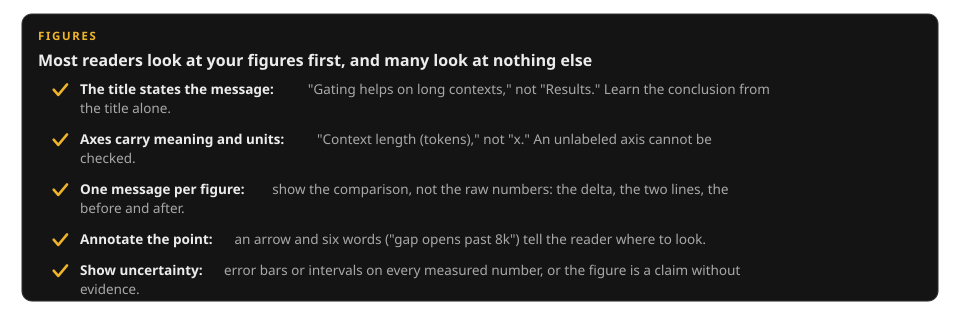
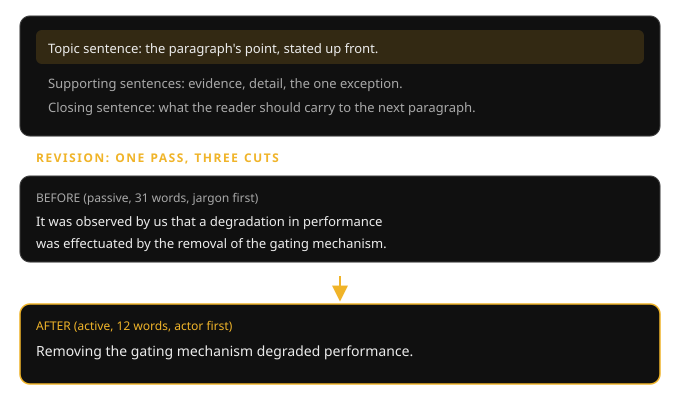
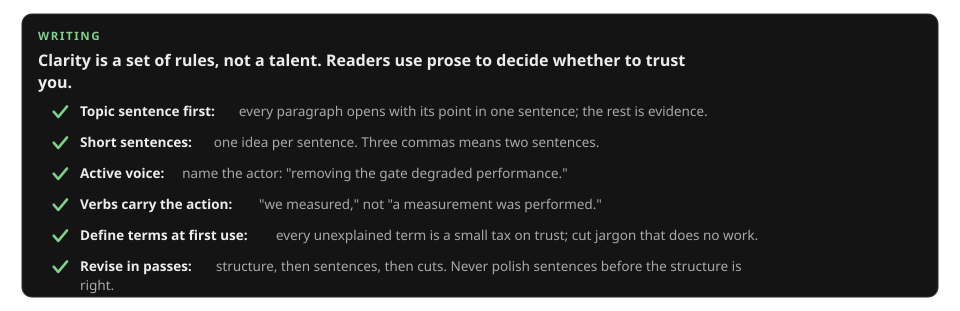
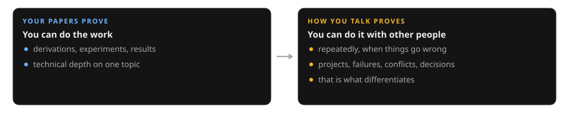

Research-Engineer CurriculumNo. 16 of 39 · Sept 2026 edition
Contents
- Who is the audience and what do they need
- Structure of a paper
- Structure of a talk
- Figures that explain
- Writing clearly
- The research communication: what it actually measures
- Your research narrative: the two-minute pitch
- Failure stories: honesty as a signal
- Conflict stories: disagreement without damage
- Reps: how practice actually works
- Calibration: contrast and the senior bar
Design prompt
- Who is the audience for this paper, and what decision will they make with it?
- State your talk's one message in a sentence. Which three slides serve it?
- Rewrite this figure title so it states the message, not the topic.
- Explain your research thread. (Two minutes, research narrative, ends with what you want to work on next.)
- Tell me about a time you failed.
- Tell me about a disagreement with a colleague.
- Why this research direction?
- Describe a project you are proud of.
- What would your collaborators say about working with you?
1. Who is the audience and what do they need
Communication starts with the reader, not with you. An audience is the set of people who will read or hear your work, and every audience walks in with a different question they need answered. The researcher who writes one explanation for all of them reaches none of them. The first move of communicating research is therefore not writing; it is naming the audience and what they need.
What it is. The reader-centric principle: write for the reader's expectations, not your own convenience. Before you write a word, answer three questions:
- Who reads this?
- What decision will they make with it?
- What must they believe after reading?
| Audience | Their decision | What they need |
|---|---|---|
| Peer reviewer | Whether your claim is true and new | Exact claims, evidence, and limitations |
| Talk audience | Whether to keep listening | One message carried by a story arc |
| Interview panel | Whether you think like a researcher | Judgment, ownership, and honesty under drill |
| Collaborator | What to build next | The mechanism and the open threads |
| Non-expert | Whether to care | Intuition and why it matters |
Why it exists. Because the failure mode of smart people is writing the explanation they would want to receive. You know the full context, the dead ends, the clever trick in the middle. Your reader knows none of it. This gap has a name: the curse of knowledge, the inability to imagine not knowing what you know. It is why experts write dense paragraphs that say nothing to a newcomer and why your first draft always assumes too much. Naming the audience is the antidote: it forces you to write from their side of the gap.
How it works under the hood. The practical method is the three-question header. At the top of every draft, write: "Reader: [who]. Decision: [what they will decide]. Belief: [what they must believe after]." Then write, and cut everything that does not serve the belief. The second method is the stranger test: hand the draft to someone outside your area (for a paper, outside your subfield; for a pitch, outside your team). Where they stumble, you were writing for yourself. Their confusion is data, not an insult; fix the draft, not the reader.
A concrete example. You are writing up a chunking ablation. For peer reviewers, the belief is "the gain comes from chunk size, not from tuning": lead with the parameter-matched controls and the confidence intervals. For your team's design review, the belief is "we should ship small chunks": lead with the latency cost and the rollout plan. Same experiment, two documents, because the decisions differ. The researcher who sends the reviewer version to the team gets blank stares; the one who sends the team version to reviewers gets rejected.
Common misunderstanding. "Good writing is good writing, audience-independent." Clarity is audience-independent; content is not. The same result needs different evidence, different depth, and a different first paragraph for a reviewer, a teammate, and a stranger. One size fits none.

Figure 1.1. Five audiences, five needs. Match the document to the decision.
How to read this diagram
- Left column: the five audiences you will actually write for. You will meet all five in a research career, often in the same week.
- Right column: what each one needs, phrased as the decision they are making. The reviewer judges truth; the talk audience rations attention; the panel judges judgment; the collaborator plans work; the non-expert decides whether to care.
- How to use it: before any draft, pick your row. If you are writing for two audiences, you are writing two documents. The three-question header (reader, decision, belief) is the one-line version of this table.
Key takeaways
- Communication starts with the reader: name the audience, the decision they will make, and the belief they must leave with, before you write.
- The curse of knowledge makes every first draft assume too much. The stranger test finds where.
- Same experiment, different documents for different audiences. One size fits none.
Design prompt
- "Who is the audience for this paper, and what decision will they make?" (If you cannot name the decision, you are not ready to write.)
- "Rewrite this paragraph for a non-expert." (Same facts, intuition first, jargon last or never.)
Practice pointer
- Take something you built recently. Write the three-question header for three different audiences (reviewer, teammate, non-expert). Notice how the belief line changes.
- Hand one paragraph to someone outside your area. Mark every place they stumble. That marked-up paragraph is your curse-of-knowledge map.
Next: Chapter 2, Structure of a paper, which gives the paper its expected shape: what goes where.
2. Structure of a paper
Chapter 1 named the audience. The unsolved problem: a paper has one fixed shape reviewers expect. What goes where?
A research paper is an argument that your claim is true and new, dressed as a report. Readers do not read it front to back; they read the abstract, skim the figures, and decide whether to trust you. The structure that survives this reality is IMRaD: Introduction, Methods, Results, and Discussion. It is the standard skeleton of a scientific paper, and every section answers exactly one question.
What it is. The hourglass shape. Start broad: the problem and why it matters (Abstract, Introduction). Narrow to your exact claim: what you did and what happened (Methods, Results). End broad again: what it means, what could be wrong, what comes next (Discussion). The Introduction answers "what problem, and what is your claim?" The Methods answers "what exactly did you do?" The Results answers "what happened?" The Discussion answers "so what, and what next?" A related-work section (prior art: what others did before you) belongs wherever it helps the reader judge novelty, usually after the Introduction or folded into the Discussion.
Why it exists. Because the reader's attention is a budget and the structure spends it wisely. The broad opening earns the reading: nobody cares about your method until they care about the problem. The narrow middle is the evidence a reviewer checks. The broad close is what the skimmer remembers. Papers that open with method details lose everyone except the already-convinced; papers with no discussion leave the reader asking "so what?"
How it works under the hood. Write the paper out of order: figures first, then Results, then Methods, then Discussion, then Introduction, and the abstract (the 150-word summary) last, because you cannot summarize an argument you have not finished making. The claim-driven rule: the Introduction states the claim in one paragraph, and every figure in Results is evidence for that claim or it gets cut. The Discussion does the honest work reviewers reward: name the limitations before they do, state what would change your mind, and separate what the data says from what you think it means.
A concrete example. A paper on chunking for RAG (retrieval-augmented generation: answering from retrieved documents). Introduction: "Retrieval quality limits RAG faithfulness; we claim chunk size is the dominant factor." Methods: three chunk sizes, same embedder, 200 labeled queries, recall at 5. Results: small overlapping chunks win by 11 points, with confidence intervals. Discussion: the effect shrinks on short documents (limitation); the mechanism is likely boilerplate dilution (interpretation, labeled as such); next step is testing on multilingual queries. A reviewer can check every claim against a figure, and the limitations section disarms the obvious objections.
Common misunderstanding. "The paper should tell the story of how I did the work." No: it should tell the argument that the work supports. The three dead ends you explored are not in the paper (they are in your lab notebook). The reader needs the shortest path from problem to evidence, not your autobiography.

Figure 2.1. The hourglass: broad, narrow, broad. Each section answers one question.
How to read this diagram
- Top (BROAD): the problem and why it matters. Abstract and Introduction. Answers: what problem, what claim. This is the only part most readers finish.
- Middle (NARROW): your exact claim and the evidence. Methods and Results. Answers: what did you do, what happened. Every figure here is evidence for the claim.
- Bottom (BROAD): what it means. Discussion, limitations, future work. Answers: so what, what could be wrong, what next. Honesty here is what reviewers remember.
Key takeaways
- A paper is an argument shaped like an hourglass: broad problem, narrow evidence, broad meaning. IMRaD is the skeleton: Introduction, Methods, Results, and Discussion.
- Each section answers one question. Write out of order: figures first, abstract last.
- The Discussion does the honest work: limitations, what would change your mind, data separated from interpretation.
Design prompt
- "State your paper's claim in one paragraph." (If it takes three, the Introduction is not ready.)
- "Which figure is evidence for which sentence of the claim?" (Every claim needs a figure; every figure needs a claim.)
Practice pointer
- Take a paper you admire. Reverse-outline it: one line per section stating which of the four questions it answers. Notice where the related work sits and why.
- Draft the Discussion for your own work first: limitations, what would change your mind, next steps. It is easier to be honest before you are selling.
Next: Chapter 3, Structure of a talk, which rebuilds the same material as a talk.
3. Structure of a talk
Chapter 2 gave you the paper's shape. The unsolved problem: a talk is not a paper read aloud. It needs its own structure.
A talk is not a paper read aloud. The audience cannot rewind you, cannot skip ahead, and will remember exactly one thing the next day. The structure that respects this is the arc: a hook that earns attention, a journey through what you tried (including what failed), the result, and a takeaway that repeats the one message. The one-message rule: a 20-minute talk can land one idea. Everything else serves it or gets cut.
What it is. Four beats:
| Beat | Time | What happens |
|---|---|---|
| Hook | 2 minutes | The problem, made concrete. A real example, a number, a failure the audience recognizes. No background section, no agenda slide. |
| Journey | 10 minutes | What you tried, in order, with the complication. The failed experiment is not a detour; it is the story, because the audience learns how you think from how you handled being wrong. |
| Result | 5 minutes | What happened, with the one figure that carries the claim. |
| Takeaway | 1 minute | The one message, stated plainly, then repeated. |
The move from the specific to the general runs underneath: start with the concrete example, then generalize to the lesson.
Why it exists. Because attention is linear and memory is lossy. A talk that covers everything the paper covers lands nothing; the audience drowns in detail and keeps none of it. The arc exists to match how people actually learn from a speaker: they follow a story, they remember a message, and they reconstruct the details later from the paper if the message earned it.
How it works under the hood. Slide discipline: one idea per slide, slides as evidence, not teleprompter. If you are reading your slides, the audience is ahead of you and bored; the slide should show the figure while you tell the story. The 2-minute test: explain the talk's message in two minutes to a colleague. If you cannot, you have two talks, not one. Backup slides (extra slides after the last one, for anticipated questions) are the professional's trick: they let you answer "did you try X?" with evidence instead of defensiveness, without bloating the main arc.
A concrete example. A 20-minute talk on the chunking work. Hook: "Our support chatbot invented order numbers, and tickets tripled." Journey: "Bigger chunks made it worse; the relevant sentence drowned. So we tested three chunk sizes." Result: the one figure, small chunks win by 11 points. Takeaway: "Split every RAG eval into retrieval recall vs generation faithfulness before touching the generator." One message, one figure, one story. The audience remembers the takeaway; the paper has the rest.
Common misunderstanding. "The talk should cover the whole paper." The talk should make the audience want to read the paper. Coverage is the paper's job. The talk's job is the message, and every slide that does not serve it is a tax on attention.

Figure 3.1. The talk arc: hook, journey, result, takeaway. One message throughout.
How to read this diagram
- The dashed banner: the one message, decided before any slide exists. If a slide does not serve it, the slide goes.
- The three circles: hook (the problem, concrete), journey (what you tried, complication included), result (what happened, with numbers). The arrows are the story moving forward; never go backward to "one more background slide."
- The takeaway bar: the last thing you say and the thing they remember. State the message, then stop. The strongest talks end early.
Key takeaways
- A talk is an arc, not a paper: hook, journey (complication included), result, takeaway. One message per talk.
- Slides are evidence, not a teleprompter: one idea per slide, the figure on screen while you tell the story.
- Backup slides answer the anticipated questions without bloating the arc. The 2-minute test finds whether you have one talk or two.
Design prompt
- "State your talk's one message in a sentence." (Then: which three slides serve it? Cut the rest.)
- "What is the complication in your story?" (No complication, no journey. Find the failed experiment and put it back in.)
Practice pointer
- Take a talk you have given or plan to give. Write the four beats on one page: hook, journey, result, takeaway. Time the takeaway: it should be under a minute.
- Build five backup slides for the questions you fear most. Rehearse answering with them, not from memory.
Next: Chapter 4, Figures that explain, which makes your figures explain instead of decorate.
4. Figures that explain
Chapters 2 and 3 told you what to say. The unsolved problem: figures that explain instead of decorate.
Most readers will look at your figures before they read your text, and many will look at nothing else. A figure is therefore not decoration; it is an argument in visual form. A figure that explains passes the 30-second test: a stranger gets its point in 30 seconds, without reading the paper.
What it is. Five rules:
- The title states the message. "Gating helps on long contexts," not "Results." The reader should learn the conclusion from the title alone.
- Axes carry meaning and units. "Context length (tokens)," not "x." An unlabeled axis is a figure that cannot be checked.
- One message per figure. Show the comparison, not the raw numbers: the delta, the two lines, the before and after.
- Annotate the point. An arrow and six words ("gap opens past 8k") tell the reader where to look.
- Show uncertainty. Error bars or intervals on every measured number, or the figure is a claim without evidence.
The caption (the text under the figure) then does the job text cannot: it states what the figure shows, what to notice, and what it means, in two or three sentences.
Why it exists. Because the figure is the most-read, most-remembered, and most-screenshotted part of your work. A clear figure carries your result into other people's talks and papers; a confusing one buries it. Figures are also where dishonesty is easiest to spot and hardest to hide: truncated axes, missing baselines, and absent error bars are visible in 30 seconds to anyone trained to look.
How it works under the hood. Design the figure before you write the paragraph about it. Sketch it on paper: what is the one comparison, what are the axes, where does the annotation go? Then apply the stranger test from Chapter 1: show the sketch to someone outside your area for 30 seconds, then ask what the point was. Whatever they missed, the figure did not say. Iterate on the sketch, not on the final render; it is cheaper. The common failure is the "data dump" figure: every condition, every baseline, six subplots, 8-point font. The fix is always subtraction: one figure, one message, the rest to the appendix.
A concrete example. The chunking result, drawn twice. Before: a plot titled "Results," axes unlabeled, two gray lines, no legend, no message. After: titled "Small chunks win on long documents," x-axis "context length (tokens)," y-axis "recall at 5," two labeled lines, an annotation arrow at "gap opens past 8k," error bars on each point. Same data. The first figure decorates; the second argues.
Common misunderstanding. "A figure should show all the data." A figure should show the argument. The appendix holds all the data. If the reader needs a magnifying glass, you have not drawn a figure; you have published a spreadsheet.

Figure 4.1. The same data, drawn twice. The title states the message; the axes carry meaning.
How to read this diagram
- Left (BEFORE): the decoration. Title "Results" says nothing; the axes have no labels or units; the two gray lines cannot be told apart. A stranger learns nothing in 30 seconds.
- Right (AFTER): the argument. The title is the conclusion; the axes say what is measured and in what units; the lines are labeled; the annotation arrow points at the finding.
- Bottom (THE TEST): the 30-second test, the only review that matters. Sketch on paper, test on a stranger, iterate before rendering.
Key takeaways
- A figure is an argument: title states the message, axes carry meaning and units, one message per figure, annotate the point, show uncertainty.
- The 30-second test: a stranger gets the point in 30 seconds or the figure is not done.
- Design on paper first, subtract ruthlessly. One figure, one message; the rest goes to the appendix.
Design prompt
- "Rewrite this figure title so it states the message." ("Results" is never the answer.)
- "What would the stranger miss in 30 seconds?" (Whatever they miss, the figure did not say. Add the annotation.)
Practice pointer
- Take a figure from your own work. Rewrite its title as the message, label every axis with meaning and units, and add one annotation arrow. Show both versions to a stranger for 30 seconds each.
- Find a figure in a paper you admire that passes the 30-second test. List the five rules it follows. Keep it as your reference.
Next: Chapter 5, Writing clearly, which sharpens the sentences themselves.

How to read this diagram
- Most readers look at your figures first, and many look at nothing else.
- The title rule is the highest-leverage one: learn the conclusion from the title alone.
- Show uncertainty on every measured number, or the figure is a claim without evidence.
5. Writing clearly
Chapter 4 made figures carry their message. The unsolved problem: the sentences themselves.
Clear writing is thinking made visible. Readers do not grade your prose; they use it to decide whether you are worth trusting. The good news is that clarity is a set of mechanical rules, not a talent. The core rule comes from the science of reading: a topic sentence first. Readers expect the point of a paragraph in its first sentence, and they get lost when it arrives in the third. Put the point up front, then the evidence.
What it is. Six rules:
- Topic sentence first. Every paragraph opens with its point, in one sentence. The rest of the paragraph is evidence for that sentence.
- Short sentences. One idea per sentence; if a sentence has three commas, it is two sentences.
- Active voice. Name the actor: "Removing the gate degraded performance," not "a degradation was effectuated." Readers track who did what; passive voice hides it.
- Verbs carry the action. Prefer strong verbs to noun phrases: "we measured," not "a measurement was performed."
- Define terms at first use, cut the rest of the jargon. Every unexplained term is a small tax on trust; jargon that does no work gets cut.
- Revise in passes. Structure pass (does the argument flow?), sentence pass (shorten, activate), cut pass (remove every word that does no work). Never revise sentences before the structure is right.
Why it exists. Because the reader's working memory is small and your paper is long. Every long sentence, every passive construction, every undefined term spends a little of that memory on decoding instead of understanding. Spend enough of it and the reader stops, not because your work is weak but because reading it hurts. Clarity is respect for the reader's budget.
How it works under the hood. The method is mechanical. First draft: write fast, ignore the rules, get the argument down. Then the structure pass: reverse-outline (one line per paragraph stating its point) and check the arc from Chapter 2. Then the sentence pass: halve the average sentence length, flip passive to active, replace noun phrases with verbs. Then the cut pass: delete every sentence that does not serve the paragraph's topic sentence, and every word that does not serve the sentence. Then the stranger test from Chapter 1: where they stumble, a rule was broken. The most common stumble is the missing topic sentence: the paragraph that makes sense only after you have read it twice.
A concrete example. Before: "It was observed by us that a degradation in performance was effectuated by the removal of the gating mechanism." (31 words, passive, the actor hides, "effectuated" does no work.) After: "Removing the gating mechanism degraded performance." (12 words, active, actor first.) Same fact. The first version makes the reader work; the second spends nothing.
Common misunderstanding. "Complex ideas need complex sentences." Complex ideas need clear sentences. The hardest papers to read are usually the ones whose authors were unsure; the fog is in the thinking, and it shows in the prose. If a sentence is hard to write simply, that is data: you may not understand the point yet.

Figure 5.1. Paragraph anatomy and one revision: topic sentence first, actor first, cut the rest.
How to read this diagram
- Top (PARAGRAPH ANATOMY): the highlighted first sentence is the topic sentence: the point, up front. The supporting sentences are evidence. The closing sentence hands the reader to the next paragraph.
- Middle (BEFORE): 31 words, passive, actor hidden, jargon doing no work. Count the cost: the reader decodes who did what before learning anything.
- Bottom (AFTER): 12 words, active, actor first. Same fact, no decoding tax. This is the sentence pass, applied once.
Key takeaways
- Clarity is mechanical: topic sentence first, short sentences, active voice, verbs over noun phrases, defined terms, revise in passes.
- Revise structure before sentences, sentences before cuts. Never polish prose on a broken argument.
- The stranger test finds every broken rule. Where they stumble, you were unclear, and a hard-to-simplify sentence means the thinking needs work.
Design prompt
- "What is the topic sentence of this paragraph?" (If you cannot point to it, write it.)
- "Halve this sentence." (Same fact, half the words. Then check: did anything load-bearing get cut?)
Practice pointer
- Take a page of your own writing. Reverse-outline it: one line per paragraph stating its point. Any paragraph whose point takes two lines needs a rewrite.
- Do one sentence pass on the same page: flip every passive construction to active, halve the longest three sentences. Read it aloud; where you run out of breath, cut.
Next: Chapter 6, The research communication: what it actually measures, which turns to interviews: what they actually measure.

How to read this diagram
- Clarity is a set of rules, not a talent.
- Three commas means two sentences.
- Never polish sentences before the structure is right.
6. The research communication: what it actually measures
Chapters 1–5 taught written communication. The unsolved problem: interviews measure something different. What are they actually testing?
A research communication is any setting where you explain your past work instead of your derivations: your projects, your failures, your conflicts, your decisions. Design reviews, paper presentations, promotion packets, and team intros all run on this skill. It feels softer than going deep on a technical topic, which is exactly why it differentiates. Your papers prove you can do the work; how you talk about the work proves you can do it with other people, repeatedly, when things go wrong. That is what the rubric measures, whether the reviewer articulates it or not.
The standard answer format is STAR (Situation, Task, Action, Result). The sharper variant for research roles is SCAR: it adds a Complication, and the complication is where research stories live. The climb below takes you from the basic format to surviving the follow-up drill.
Figure 6.1. STAR for ownership stories, SCAR for research stories. The complication is the point.
How to read this diagram: the climb
- Step 1, STAR: the ownership story. S (~20 s): one or two sentences of context: where you were, what the project was, why it mattered. No backstory novels. T (~15 s): what you were responsible for: the ownership line, specific and personal. A (~60 s): the longest section: what you did, step by step, with the reasoning. This is where the reviewer learns how you think. R (~30 s): what happened, with numbers, plus what you learned. End on the lesson: it signals growth, which is on the rubric.
- Step 2, SCAR: add the complication. Research stories need a C (~20 s): what made it hard or interesting. The failed experiment, the baseline that lied, the constraint that forced creativity. Without it the story is flat; with it the reviewer sees research judgment, not just execution.
- Step 3, survive the drill: depth of truth. After your 2-3 minutes the reviewer drills: "what exactly did you do vs the team?", "what would you do differently?", "how did you know it worked?" Rehearsed stories survive the prompt but die in the follow-ups, because follow-ups probe the parts you did not script. The defense: pick stories you actually lived, with numbers you know, and a genuine "what I would change." Be precise about credit: say "I" for your actions and "we" for the team's. That precision is itself a seniority signal.
The 2-minute SCAR skeleton (memorize the beats, not the words): ──────────────────────────────────────────────────────────── S - Situation: the question and why it mattered (20 s) T - Task: YOUR hypothesis, stated falsifiably (15 s) C - Complication: the experiment that failed, the baseline that lied (20 s) A - Action: the experiments, with controls (45 s) R - Result: the verdict + diagnosis + next step (40 s)
A concrete example. Prompt: "Tell me about a challenging project."
Weak answer: "We built a RAG system. It was hard because the data was messy. I cleaned the data and it worked. The team was happy." (No ownership, no complication, no numbers, no lesson.)
Strong answer, in STAR form:
| Beat | The story |
|---|---|
| S (Situation) | Our support chatbot was hallucinating order numbers, and support tickets about it had tripled. |
| T (Task) | I owned the retrieval half of the RAG pipeline (RAG: retrieval-augmented generation, answering from retrieved documents). |
| C (Complication) | My first fix, bigger chunks, made recall worse: the relevant sentence drowned in boilerplate. |
| A (Action) | I ran a chunking ablation (removing or varying one component to measure its contribution): three chunk sizes, recall@5 (whether the right answer appears in the top 5 retrieved chunks) on 200 labeled queries, same embedder (the model converting text to vectors). Small overlapping chunks won by 11 points. Then I found the embedder was the next bottleneck and fine-tuned it on our tickets. |
| R (Result) | Hallucination tickets dropped 60% in a month. Lesson: I now split every RAG eval into retrieval recall vs generation faithfulness before touching the generator. |
Same project, different review.
Common misunderstanding. "Research communication is about being likable." Likability helps, but the rubric scores evidence: specific actions, real numbers, honest lessons. A speaker who is warm but vague loses to one who is reserved but precise. Prepare evidence, not charm.
Design prompt
- "Explain your research." (Two minutes: present, past, future. End with what you want next and why this direction.)
- "What is the difference between STAR and SCAR, and when do you use each?" (STAR for ownership/collaboration stories; SCAR when the interesting part is the complication, which is most research stories.)
Lab
- Write three stories in SCAR: one success, one failure, one disagreement. Time each at 2 minutes. Record yourself and check: did you say "I" for your actions and "we" for the team's?
- For each story, write the three follow-ups you fear most, and answer them in writing.
Next: Chapter 7, Your research narrative: the two-minute pitch, which compresses your work into a two-minute pitch.

How to read this diagram
- Left: derivations, experiments, results. Technical depth.
- Right: projects, failures, conflicts, decisions. Collaboration.
- That difference is what differentiates.
7. Your research narrative: the two-minute pitch
Chapter 6 named what interviews measure. The unsolved problem: compressing your work into two minutes.
A research narrative is the story of your work as a coherent arc, not a list of projects. It answers the three questions every reviewer is silently asking: what do you work on, why does it matter, and what is the thread that connects it all? The two-minute pitch is the compressed form: the answer to "walk me through your research."
Figure 7.1. The pitch arc: context, thread, proof, direction. The thread does the heavy lifting.
How to read this diagram: the climb
- Step 1, PROBLEM SPACE (~20 s): the area, in plain language. What the area is and why it matters, so a smart engineer outside your field can follow it. This is the hook: reviewers remember narratives, and the pitch opens the review and sets the frame for everything after.
- Step 2, THREAD (~30 s): one question connecting your projects. Find it by reverse-outlining: list your 3-5 projects and ask what question you were really answering (usually one level up from any single project). Without the thread you are a project list; with it you are a research program. This beat also answers the motivation question before it is asked.
- Step 3, PROOF (~60 s): exhibits, not a tour. Two or three results, one line each, with numbers. Each one is evidence for the thread, not a summary of everything you have done.
- Step 4, DIRECTION (~30 s): what is next, and why here. Connect your thread to the team's actual work: name something specific from their blog or papers. That homework is what separates "I want any research job" from "I want this one." Then compress the whole thing to about 250 words and rehearse it until it sounds like thinking, not reciting.
A concrete example. "I work on making LLM serving cheaper without hurting quality [problem space + thread]. At my current role I own the inference stack: I built the capacity model our team uses for provisioning, which cut our GPU bill by about a third while holding p99 [proof 1]. Before that I worked on evals: I built a faithfulness harness for our RAG system because our judge model was rewarding long answers [proof 2]. The thread across both is measurement you can trust: I am the person who checks whether the numbers mean what we think. Next I want to work on [team's area], because [specific connection to their published work or problems] [direction]."
Common misunderstanding. "The pitch should cover everything I have done." No: it should cover the thread, with the best exhibits. The reviewer will ask about the rest if they care. A pitch that tries to include everything includes nothing memorable. Cut until it hurts, then cut one more project.
You might be wondering: I come from industry engineering, not academia. Is that a disadvantage?
No: it is a different thread, not a weaker one. Your narrative is "I ship systems that survive production": the proof is reliability, cost, and scale, not citations. Research labs want that thread, because most of their ideas die between the paper and the cluster. Frame your industry work as the complication in your SCAR stories (Chapter 6): constraints are what make engineering stories interesting. The only real disadvantage is if you apologize for it: own the thread.
Design prompt
- "Tell me about your research." (Deliver the pitch. Then: "what is the thread?" If you cannot name it in one sentence, go back to reverse-outlining.)
- "Why this direction?" (The direction beat, expanded: name something specific the team does and why your thread fits it. Generic flattery is a fail.)
Practice pointer
- Write your pitch at 250 words. Read it aloud and time it. Cut 50 words. Time it again. Repeat until it fits 2 minutes with breathing room.
- Deliver it to a friend outside your field. If they cannot repeat your thread back to you, the thread is not clear enough.
Next: Chapter 8, Failure stories: honesty as a signal, which prepares the failure stories interviews are designed to extract.
8. Failure stories: honesty as a signal
Chapter 7 gave you the pitch. The unsolved problem: the questions designed to break the pitch. Failure stories.
A failure story is your answer to "tell me about a time you failed," and it is the highest-signal 3 minutes in a postmortem, a design review, or a promotion review. Everyone claims they learn from failure; almost nobody can tell a failure story with a real mistake, real consequences, and a real changed behavior. The ones who can are instantly credible, because honesty about failure is the hardest thing to fake. Research is failure-dense: most experiments do not work, and an engineer who cannot name a real failure is either inexperienced or hiding something.
Figure 8.1. The anatomy of a failure story that builds trust instead of costing it.
How to read this diagram: the climb
- Step 1, MISTAKE: front-load it. "I made a bad call," in the first 20 seconds. No euphemism, no "we faced challenges." The bluntness is the signal: it proves you are not going to spin, and it frees the rest of the story for the interesting part.
- Step 2, CONSEQUENCE: what it cost, with numbers. Wasted compute, slipped deadline, wrong decision shipped. Without consequences it was not a failure. This is also the calibration test: reviewers want to see you know a small mistake from a big one, and the humblebrag ("I worked too hard") fails it instantly.
- Step 3, DIAGNOSIS: the mechanism, not a character flaw. "I trusted the benchmark without checking what it measured" is a diagnosis; "I was careless" is not. Name why you made the mistake: rushed, overconfident, skipped a check.
- Step 4, CHANGED BEHAVIOR + RECEIPT: prove the lesson stuck. What you do differently now, plus a later example where the new habit paid off. The receipt is what separates a confession from a growth story.
T: "I was asked to speed up the pipeline without hurting quality."
C: "My mistake: I removed the reranker based on offline metrics alone and shipped it. Online, quality dropped: the offline eval did not measure the long-tail queries where the reranker mattered."
A: "I rolled it back within the day, then built the eval I should have built first: stratified by query type (stratified: sampled proportionally from each category), with the long tail oversampled."
R: "The new eval showed the reranker mattered only for 8% of queries. I kept it for those and cut p99 latency 30% overall. Now I never ship a removal without a stratified eval: that checklist has caught two similar mistakes since."
The calibration contrast. Compare the humblebrag version: "I once worked too hard on a pipeline and burned out, but the team appreciated my dedication." That engineer just told the reviewer they cannot calibrate. Do not be that engineer.
Common misunderstanding. "Admitting failure makes me look weak." Reviewers hear dozens of engineers; the ones they remember are the ones who were honest about something real. A polished presenter with no failures is less trustworthy than a candid one with scars, because the reviewer knows research involves failing and wonders what you are hiding.
You might be wondering: what if my best work is confidential and I cannot share details?
Talk about the shape, not the secret: the problem class, the methods, the scale, the lessons. "I worked on a retrieval system at significant scale" plus real methodological detail (how you evaled, what failed, what you learned) is more impressive than vague claims about secret breakthroughs. Never hint that you will share confidential details in the review: the reviewer is watching how you handle confidentiality, because it predicts how you will handle theirs. The line is: "I can't share the specifics, but here's what I learned that generalizes."
Design prompt
- "Tell me about a time you failed." (Deliver your story. Then the reviewer drills: "what exactly was your mistake?" Have the one-sentence diagnosis ready.)
- "What is the difference between a mistake and a failure?" (A mistake is the action; a failure is the outcome. Good stories have both, plus the diagnosis that connects them.)
Practice pointer
- Write your failure story in SCAR. Check it against the four-part anatomy: is the mistake front-loaded? Are there numbers? Is the diagnosis mechanistic? Is there a receipt?
- Read it to a friend and ask: "does this sound like a real mistake or a humblebrag?" Believe their answer.
Next: Chapter 9, Conflict stories: disagreement without damage, which covers disagreement without damage.
9. Conflict stories: disagreement without damage
Chapter 8 covered failure. The unsolved problem: disagreement. Showing you can fight well.
"Tell me about a disagreement with a colleague" is the prompt engineers fear most and prepare for worst. The fear is misplaced: the reviewer is not looking for drama, they are looking for evidence that you can hold a technical position, listen to opposition, and converge without burning the relationship. The story that does this well is rarer, and more impressive, than any success story.
Research teams run on disagreement: about directions, about methods, about what the data means. An engineer who avoids conflict lets bad ideas through; one who creates conflict poisons the team. The reviewer is trying to place you on that spectrum from one story. What they want to hear is disagree and commit done right: strong views, loosely held, resolved by evidence rather than authority or volume.
Figure 9.1. The evidence ladder: positions become tests, tests become data, data becomes decisions.
How to read this diagram: the climb
- Step 1, POSITIONS: state both sides fairly. Your view and theirs, both with their best reasons. The steelman test (steelman: the strongest version of the other side's argument): would they agree with your summary? Candidates who caricature their opponent ("he just didn't get it") fail instantly, because the reviewer is imagining being your colleague in the next disagreement.
- Step 2, FAIR TEST: propose the experiment both sides accept in advance. Including what would change each side's mind. Proposing a test you could lose is the credibility move. This is evidence over argument, and it is the heart of the story: it shows you are empirical, fair, and that the disagreement made the work better.
- Step 3, DATA: the result. The story works whether you won or lost. Losing gracefully and committing fully is the stronger signal: it proves you update on evidence, which is the actual skill being tested.
- Step 4, DECISION + RELATIONSHIP: what was decided, and the relationship after. "We still collaborate closely" is not a throwaway line: it is the point. Own your part even when you were right: name what you would do better next time ("I should have run the numbers before the meeting instead of during it").
A concrete example, in STAR form:
| Beat | The story |
|---|---|
| S (Situation) | We disagreed on whether to quantize our serving model to INT8 (8-bit integer precision: half the memory of FP16, roughly 2x throughput, with quality risk). My colleague argued the quality risk was unacceptable for our use case; I argued the 2x throughput would halve our GPU bill. |
| T (Task) | I owned the serving cost; she owned quality. |
| C (Complication) | We were talking past each other: cost vs quality with no common metric. |
| A (Action) | I proposed a fair test: quantize, run our full eval harness plus a blind human comparison on 500 samples, with a pre-agreed bar (no more than 1 point of quality loss). If it failed the bar, we would drop it and I would stop pushing. |
| R (Result) | It passed at 0.4 points of loss. We shipped INT8, saved ~40% on serving, and she now runs the quantization evals for every model change. I learned to convert cost-vs-quality arguments into a pre-agreed test instead of debating principles. |
Common misunderstanding. "I should pick a disagreement I won." A story where you lost gracefully and committed to the other direction is stronger: it proves you update on evidence, which is the actual skill being tested. The only losing story is one where nobody learned anything or the relationship broke.
Design prompt
- "Tell me about a disagreement with a colleague." (Deliver your story. Then: "what was their best argument?" If you cannot steelman it, you are not ready.)
- "Tell me about a time you changed your mind." (The flip side: a story where the evidence beat your position. Have one. It is the strongest update-on-evidence signal you can give.)
Practice pointer
- Write your conflict story. Highlight the steelman: is it genuinely fair? Ask someone who knows the situation (if possible) whether the other side would agree with your telling.
- Write the "I lost" version too: a disagreement where the other person was right. Practice telling it with genuine respect, not martyrdom.
Next: Chapter 10, Reps: how practice actually works, which turns stories into reps.
10. Reps: how practice actually works
Chapters 6–9 gave you the stories. The unsolved problem: stories only work rehearsed. How practice actually works.
Knowing the STAR framework and performing it under pressure are different skills, separated by about twenty reps. This chapter is the training plan: how to practice research stories so they survive nerves, follow-up drills, and the reviewer who interrupts.
Figure 10.1. The five-step progression. Each step kills one failure mode.
How to read this diagram: the climb
- Step 1, WRITTEN: the anatomy check. Every story on paper in SCAR before it is ever spoken. Fixes structural failure: without this, the rest is improv on a shaky frame.
- Step 2, TIMED: 2 minutes, aloud, alone. Fixes the "my story is 6 minutes long" failure. Two minutes is shorter than you think: this step trains compression.
- Step 3, RECORDED: watch yourself. Fixes filler words, vagueness, and the moment you say "we" when you mean "I." You do not sound like you think you sound: this step trains self-awareness.
- Step 4, DRILLED: a partner interrupts with follow-ups. "What exactly did you do?" "What would you change?" Fixes the "my script died at the first question" failure: this step trains robustness.
- Step 5, COLD: random prompt, 30 seconds to think, then deliver. Fixes the "I froze" failure. This is the closest simulation to the real thing: it trains retrieval. Skipping any step leaves that failure mode live, and the review will find it.
A concrete example. Week plan for someone 3 weeks out: Week 1: write 6 stories (success, failure, conflict, leadership, ambiguity, motivation), 2 per day, anatomy-checked. Week 2: timed + recorded reps, 3 stories per day, feedback pass after each; build the story bank with prompt tags. Week 3: drilled + cold reps with a partner, 45 minutes every other day; interruption drills on the weakest two stories. Total: ~10 hours. The engineer who does this walks in with stories that survive contact with the reviewer; the engineer who "thought about it" walks in with step 1 and hopes.
Common misunderstanding. "Rehearsing makes me sound robotic." Under-rehearsing makes you sound lost; rehearsing the beats (not the words) makes you sound clear. The goal is not memorization but internalization: know the anatomy so well you can improvise within it. Jazz musicians practice scales; nobody calls them robotic.
You might be wondering: what if I have no practice partner?
You can do steps 1-3 and a version of 5 alone: write, time, record, and do cold reps against a shuffled prompt list. For the drill step, simulate follow-ups yourself: after each rep, write the three questions you least want to be asked, then answer them on camera. It is less fun than a partner and about 80% as effective. The one thing you cannot simulate alone is interruption: for that, even one session with a friend (or a rubber-duck video call with yourself, pausing to interject) is worth more than five solo reps. One partner session beats zero.
Design prompt
- "How do you prepare a research story?" ("A story bank of 6-8 SCAR stories, drilled with follow-ups and interruption. Want to try one?" Offering the demo is a power move.)
- "What is your weakest story right now?" (Honest answer + what you are doing about it. Meta-honesty about preparation is itself a signal.)
Practice pointer
- Do one full progression ladder this week: pick your weakest story and take it from written to cold, one step per day.
- Build the story bank: 6 stories minimum, each tagged with 3 prompts it answers. Find the prompt with no story: that gap is your next writing session.
Next: Chapter 11, Calibration: contrast and the senior bar, which calibrates you against the senior bar.
11. Calibration: contrast and the senior bar
Chapter 10 built the reps. The unsolved problem: knowing what "good" looks like. Calibrating against the senior bar.
Calibration is knowing where the bar is and where you stand relative to it. Most engineers walk into high-stakes reviews with no model of what "good" looks like: they have never seen a strong answer and a weak answer side by side, so they cannot tell which one they are giving. The miscalibration runs both ways: weak communicators think they did well (no contrast), strong ones think they did badly (impostor contrast against imagined perfection). This chapter is the contrast training: paired examples that tune your judgment, plus an honest method for finding your own level.
Figure 11.1. The contrast pair: same prompt, different evidence. Learn to hear the deltas.
How to read this diagram: the climb
- Step 1, study the contrast pair. The same prompt answered weakly and strongly, side by side. The weak answer is vague, team-credited, lesson-free ("We built a RAG system and it went well"); the strong answer is specific, ownership-clear, and ends on a genuine lesson (the chunking ablation, the 11-point recall win, the 60% ticket drop). Same project, different evidence.
- Step 2, label the deltas. Every weak-to-strong upgrade is one of four: specificity (numbers and actions), ownership (I vs we), complication (real vs cosmetic), lesson (genuine vs humblebrag). Internalize that list: it becomes your real-time monitor. Mid-answer, ask yourself which column you are in; if it is the weak one, add a number, the fastest way to cross over.
- Step 3, write your own feedback as a senior reviewer. After each practice rep: "strong / developing / weak, because..." This forces you to evaluate the evidence you actually produced, not the story you meant to tell. The way to build the set: for each story in your bank, write the weak version deliberately, then the strong version, then label the deltas. Calibrate against the rubric's bar ("strong hire"), not against imagined perfection: candidates who calibrate against perfection either freeze or ramble.
A concrete example. Prompt: "Why this research direction?" Weak: "I am passionate about AI and this area is important, so I would love to contribute." (Passion is uncheckable; "important" is flattery; "contribute" is content-free.) Strong: "I have spent two years on serving cost: my capacity model cut our GPU bill by a third. The team works on [specific system from their blog], which is the same problem at larger scale, and I want to work where the problem is hardest. The thread of my work points here." (Evidence, thread, homework.) The delta: specificity + direction. The senior reviewer writes: "motivated, has done homework, clear trajectory." That is a strong signal in one answer.
Common misunderstanding. "Calibration means comparing myself to the best candidate imaginable." No: it means comparing your evidence against the rubric's bar. The bar is "strong hire," not "perfect human." Candidates who calibrate against perfection either freeze or ramble; candidates who calibrate against the rubric's actual signals (specificity, ownership, lesson) aim at something reachable and hit it.
Design prompt
- "What does strong look like in a research review?" (Specific evidence, clear ownership, real complications, genuine lessons. Then: "here is where I am strongest and what I am still working on.")
- "What would your reviewers write about you?" (Answer as a senior reviewer, honestly. The ability to do this accurately is calibration.)
Practice pointer
- Take your three best stories and write the weak version of each deliberately. Label the deltas. Keep the pairs: they are your calibration set.
- After your next three practice reps, write senior-reviewer feedback before looking at any notes. Compare with a partner's assessment if you have one: how close was your calibration?
Watch and go deeper
Four talks from teachers famous for clarity, plus the texts and tools to read next. Videos play right here, and a speed control appears on each player.
Go deeper
- Simon Peyton Jones: How to give a great research talk The slides and the paper behind both SPJ talks. Reuse the rules for your next presentation. Companion to chapters 2 and 3.
- Matt Might: presentation advice Short, opinionated rules for academic talks. Companion to chapter 3.
- MIT OCW: How to Speak course page The course page for Winston's talk, with background and materials. Companion to chapter 3.
- Gopen and Swan: The Science of Scientific Writing The classic paper on writing for the reader's expectations. University-hosted PDF. Companion to chapters 1 and 5.